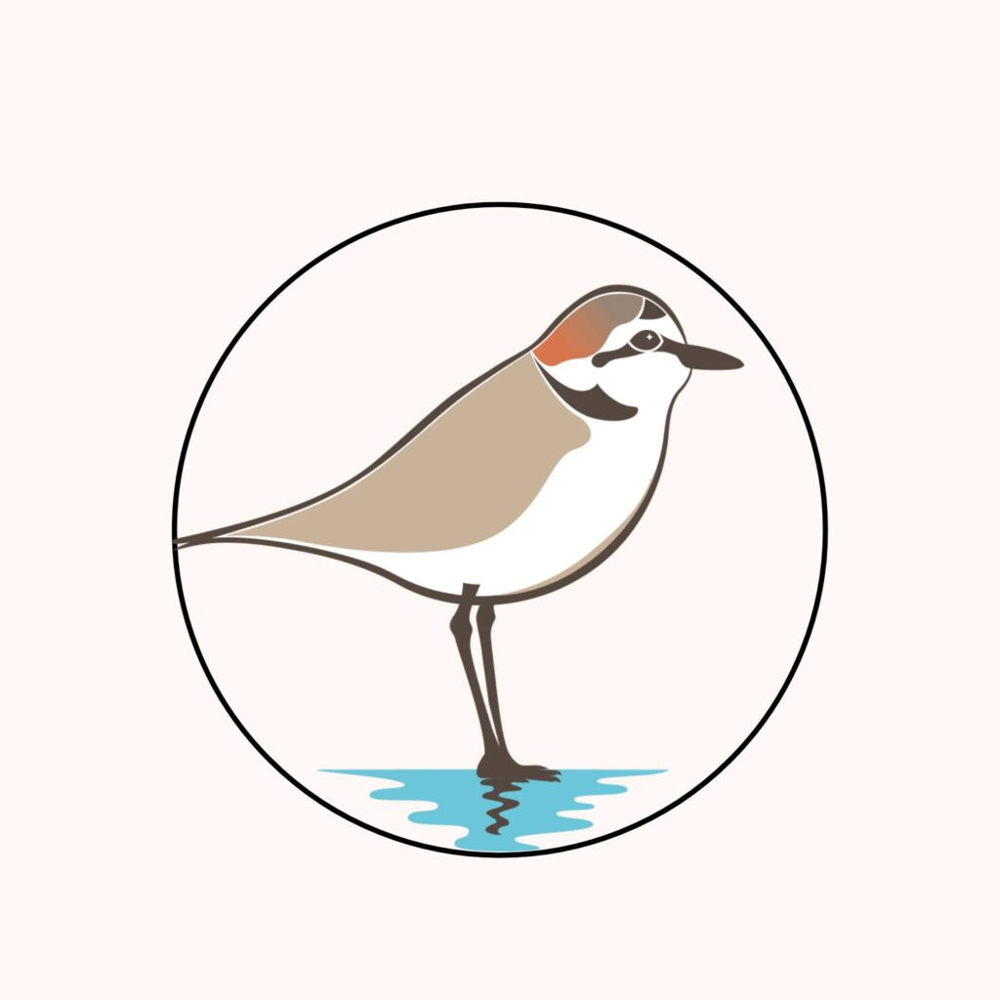

For a better environment
The Institute of Applied Ecology (IEA) is a not-for-profit organisation established in 1987 to support public and private organisations, in Italy and abroad, in the management of natural assets, particularly terrestrial and marine wildlife and habitats.
LIFE Alexandro
Concrete actions to improve the conservation of the Kentish plover in Italy and Croatia (2026–2031).
LIFE Wild Wolf
Concrete actions to deter wolves from human-dominated areas in Europe (2023–2027).
LIFE MedWolf
The project took place in Italy and Portugal from September 2012 to November 2017, involving agricultural and environmental associations, institutions and research centres.
Stakeholder platforms
Spaces of dialogue among the parties interested in the presence of large carnivores in their areas.
Latest news from LIFE Alexandro

Presentation of the alexandro web app
On November 19, 2026, at 9:30 a.m. at the Granaio Lorenese in Alberese (GR), in the Maremma Regional Park, the Alexandro web app will be presented.…

Life alexandro at punta faro
On October 7, 2026, a joint IEA-UNIPI-LIPU site visit was conducted at the Punta Faro project site in Lignano Sabbiadoro (UD), to measure the dune…

First training webinar for volunteers in croatia
On June 9, 2026, the first training course was held remotely for volunteers who will be involved in monitoring and surveying Kentish plover nests in…
Our mission
Managing the environment and the conflicts between human activities and wildlife, enhancing and conserving natural resources through participatory practices based on sound scientific evidence.

Alexandro WebApp
From your smartphone browser, learn to recognise the Kentish plover and send sightings.